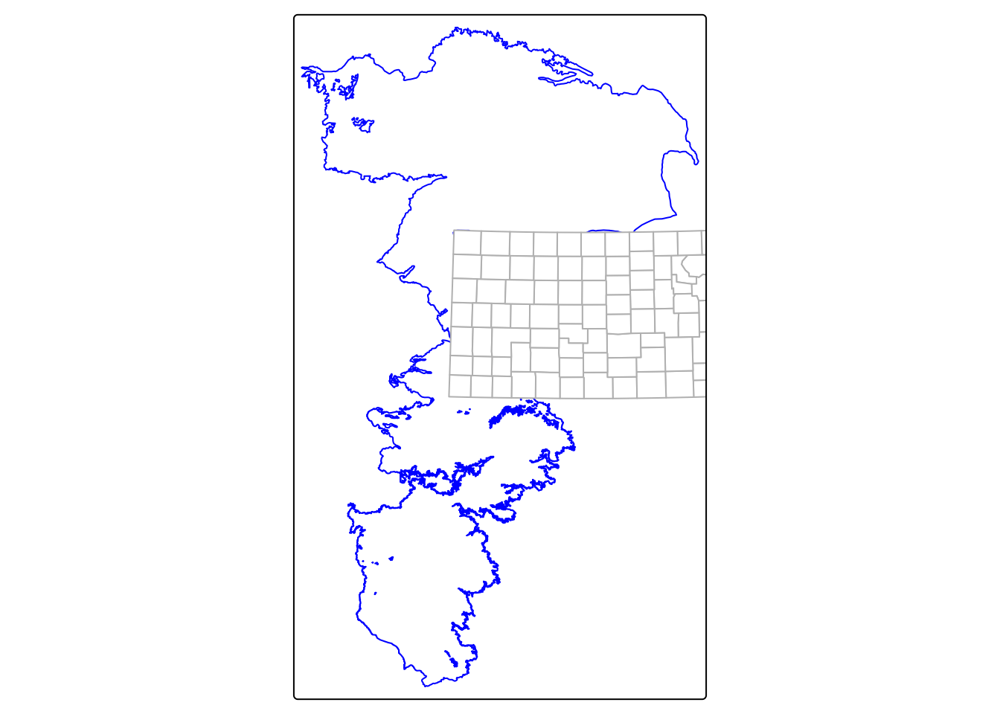
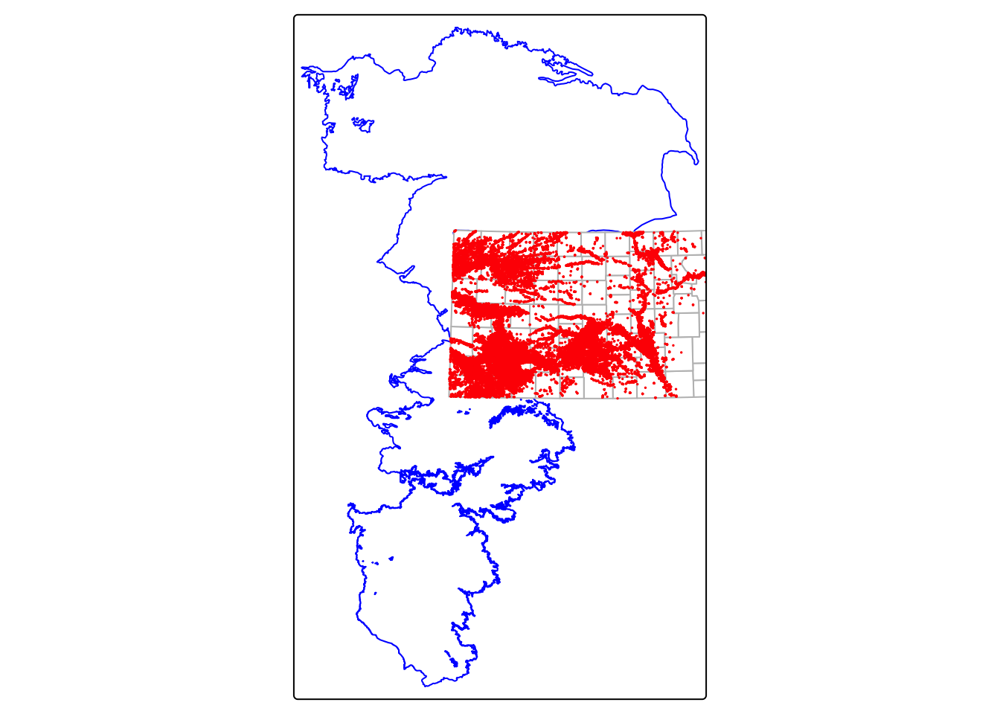
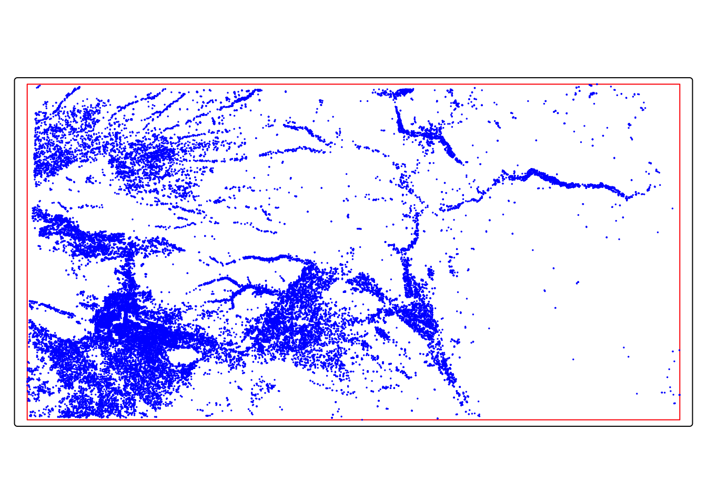
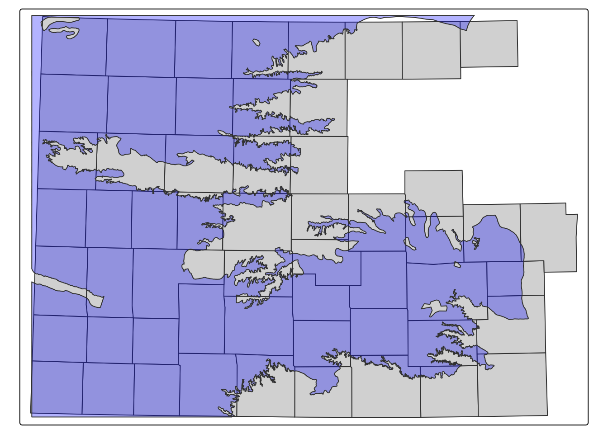
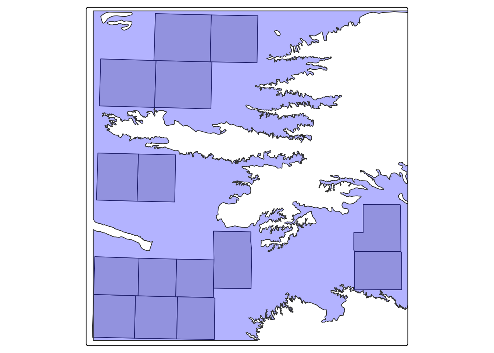
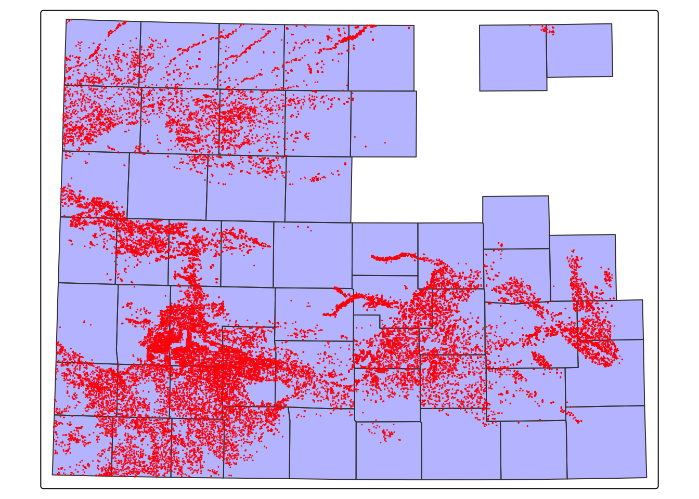
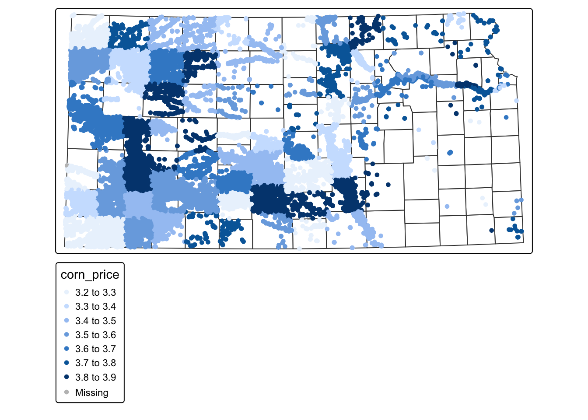

In this chapter, we learn how two spatial datasets (sf objects) can interact with each other. In other words, we explore how geographic features relate across datasets (We follow R as GIS for Economists.)
We start by looking at topological relationships, which describe how spatial objects are positioned relative to one another. For example, we use functions like sf::st_intersects() to check whether two features overlap.
The function sf::st_intersects() is especially important because it is the most commonly used relationship and is the default option when working with spatial filtering and joining in sf.
Next, we move on to spatial subsetting, where we filter one dataset based on its geographic relationship with another dataset. For example, we might keep only the features that fall within a certain region.
Finally, we cover spatial joins, which allow us to combine information from two spatial datasets. In this case, data from one dataset (such as attributes or variables) are added to another based on how their spatial features relate.
pacman::p_load( sf, # vector data operations dplyr, # data wrangling data.table, # data wrangling ggplot2, # for map creation tmap # for map creation)
10.1 Data
In this section, we work with three types of sf objects: points, lines, and polygons. To help you understand how spatial interaction functions work, we begin with simple, made-up datasets.
Points
Code
# create points point_1 <-st_point(c(2, 2))point_2 <-st_point(c(1, 1))point_3 <-st_point(c(1, 3))# combine the points to make a single sf of pointspoints <-list(point_1, point_2, point_3) %>%st_sfc() %>%# combines individual points into a geometry columnst_as_sf() %>%# sf data framemutate(point_name =c("point 1", "point 2", "point 3"))points
Simple feature collection with 3 features and 1 field
Geometry type: POINT
Dimension: XY
Bounding box: xmin: 1 ymin: 1 xmax: 2 ymax: 3
CRS: NA
x point_name
1 POINT (2 2) point 1
2 POINT (1 1) point 2
3 POINT (1 3) point 3
Lines
Code
# create lines line_1 <- sf::st_linestring(rbind(c(0, 0), c(2.5, 0.5)))line_2 <- sf::st_linestring(rbind(c(1.5, 0.5), c(2.5, 2)))# combine the lines to make a single sf objectlines <-list(line_1, line_2) %>% sf::st_sfc() %>% sf::st_as_sf() %>% dplyr::mutate(line_name =c("line 1", "line 2"))lines
Simple feature collection with 2 features and 1 field
Geometry type: LINESTRING
Dimension: XY
Bounding box: xmin: 0 ymin: 0 xmax: 2.5 ymax: 2
CRS: NA
x line_name
1 LINESTRING (0 0, 2.5 0.5) line 1
2 LINESTRING (1.5 0.5, 2.5 2) line 2
Polygons
In sf::st_polygon(), the first and last coordinates must be the same to “close” the polygon.
Code
# create polygons polygon_1 <-st_polygon(list(rbind(c(0, 0), c(2, 0), c(2, 2), c(0, 2), c(0, 0))))polygon_2 <-st_polygon(list(rbind(c(0.5, 1.5), c(0.5, 3.5), c(2.5, 3.5), c(2.5, 1.5), c(0.5, 1.5))))polygon_3 <-st_polygon(list(rbind(c(0.5, 2.5), c(0.5, 3.2), c(2.3, 3.2), c(2, 2), c(0.5, 2.5))))# combine the polygons to make an sf of polygons polygons <-list(polygon_1, polygon_2, polygon_3) %>% sf::st_sfc() %>% sf::st_as_sf() %>% dplyr::mutate(polygon_name =c("polygon 1", "polygon 2", "polygon 3"))polygons
Simple feature collection with 3 features and 1 field
Geometry type: POLYGON
Dimension: XY
Bounding box: xmin: 0 ymin: 0 xmax: 2.5 ymax: 3.5
CRS: NA
x polygon_name
1 POLYGON ((0 0, 2 0, 2 2, 0 ... polygon 1
2 POLYGON ((0.5 1.5, 0.5 3.5,... polygon 2
3 POLYGON ((0.5 2.5, 0.5 3.2,... polygon 3
Code
tm_shape(polygons) +tm_polygons(col ="polygon_name", alpha =0.3, title ="Polygons") +tm_shape(lines) +tm_lines(col ="line_name", title ="Lines") +tm_shape(points) +tm_symbols(shape ="point_name", size =0.5, title ="Points")
[v3->v4] `tm_polygons()`: use 'fill' for the fill color of polygons/symbols
(instead of 'col'), and 'col' for the outlines (instead of 'border.col').
[v3->v4] `tm_polygons()`: use `fill_alpha` instead of `alpha`.
[v3->v4] `tm_polygons()`: migrate the argument(s) related to the legend of the
visual variable `fill` namely 'title' to 'fill.legend = tm_legend(<HERE>)'
[tm_lines()] Argument `title` unknown.
[tm_symbols()] Argument `title` unknown.
This message is displayed once every 8 hours.
10.2st::st_intersects()
sf::st_intersects() identifies which spatial features in one sf (or sfc) object intersect with features in another. In other words, it checks which geometries overlap or touch across two spatial datasets.
For example, you can use this function to determine which wells fall within which county boundaries. Because of its flexibility and broad definition of “intersection,” sf::st_intersects() is the most commonly used topological relationship in spatial analysis.
Points and polygons intersection
As shown in the output, the result is a list indicating which polygon(s) each point intersects with. The numbers in each entry refer to the row indices of the polygon object.
For example, the values 1, 2, 3 in the first row mean that the first point (point 1) intersects with the first, second, and third polygons in the polygons object. In other words, point 1 falls within all three polygons.
Code
st_intersects(points, polygons)
Sparse geometry binary predicate list of length 3, where the predicate
was `intersects'
1: 1, 2, 3
2: 1
3: 2, 3
Lines and polygons intersection
The output is a list of which polygon(s) each of the lines intersect with. For example, line intersects with the 1st and 2nd elements of polygons, which are polygon 1 and polygon 2.
Code
st_intersects(lines, polygons)
Sparse geometry binary predicate list of length 2, where the predicate
was `intersects'
1: 1
2: 1, 2
Polygons and polygons intersection
For polygons vs polygons interaction, sf::st_intersects() identifies any polygons that either touches (even at a point like polygons 1 and 3) or share some area.
Code
st_intersects(polygons, polygons)
Sparse geometry binary predicate list of length 3, where the predicate
was `intersects'
1: 1, 2, 3
2: 1, 2, 3
3: 1, 2, 3
10.3 Spatial cropping
Spatial cropping is used to cut a spatial layer down to a smaller area using the boundary of another layer. You can think of it like using a cookie cutter on dough: the boundary layer acts as the cutter, and only the features inside that shape are kept. For example, you could crop a statewide river layer to a single county so students can work only with the rivers in their study area. This makes the data smaller, easier to manage, and more focused on the place being studied.
To learn how spatial cropping works, import the following datasets into your R session:
KS county borders (KS_county_borders.rds) - store as ks_counties
High Plains aquifer boundary (hp_bound2010.shp) - store as hpa
Irrigation wells in KS (Kansas_wells.rds) - store as ks_wells
US railroads in the Mid West region (mw_railroads.geojson) - store as rail_roads_mw
Code
# KS county bordersks_counties <-readRDS("../data/vector data/KS_county_borders.rds") # High Plains aquifer boundaryhpa <-st_read("../data/vector data/hp_bound2010.shp")
Reading layer `hp_bound2010' from data source
`/Users/gperezqu/Library/CloudStorage/OneDrive-UniversityofTennessee/University of Tennessee/Teaching/R as GIS for Economists/data/vector data/hp_bound2010.shp'
using driver `ESRI Shapefile'
Simple feature collection with 199 features and 1 field
Geometry type: POLYGON
Dimension: XY
Bounding box: xmin: -805708.3 ymin: 983257.8 xmax: -21500.35 ymax: 2312747
Projected CRS: NAD_1983_Albers
Code
# Irrigation wells in KSks_wells <-readRDS("../data/vector data/Kansas_wells.rds")# US railroads in the Mid West regionrail_roads_mw <-st_read("../data/vector data/mw_railroads.geojson")
Reading layer `mw_railroads' from data source
`/Users/gperezqu/Library/CloudStorage/OneDrive-UniversityofTennessee/University of Tennessee/Teaching/R as GIS for Economists/data/vector data/mw_railroads.geojson'
using driver `GeoJSON'
Simple feature collection with 100661 features and 2 fields
Geometry type: MULTILINESTRING
Dimension: XY
Bounding box: xmin: -414024 ymin: 3692172 xmax: 2094886 ymax: 5446589
Projected CRS: WGS 84 / UTM zone 14N
Before performing any spatial cropping, all layers should use the same coordinate reference system (CRS). This ensures that each dataset lines up correctly in the same map space.
In this step, transform the KS county boundaries to UTM Zone 14N (EPSG: 32614), and then reproject the aquifer boundary and irrigation wells so they match the CRS of KS_counties.
Code
ks_counties <-st_transform(ks_counties, 32614)
old-style crs object detected; please recreate object with a recent sf::st_crs()
Create a map showing the boundaries of the High Plains Aquifer and Kansas counties.
Code
tm_shape(hpa) +tm_polygons(col ="blue", fill ="white") +tm_shape(ks_counties) +tm_polygons(col ="gray", fill ="white")

Now, add the irrigation wells layer to your map to display their locations within the study area.
Code
tm_shape(hpa) +tm_polygons(col ="blue", fill ="white") +tm_shape(ks_counties) +tm_polygons(col ="gray", fill ="white") +tm_shape(ks_wells) +tm_dots(fill ="red", size =0.05)

10.3.1 Bounding box
We can use st_crop() to reduce a spatial dataset to the rectangular area covered by another spatial object. This rectangular area is called a bounding box, and it represents the smallest box (defined by minimum and maximum x and y coordinates) that fully contains all features in a dataset.
Every spatial dataset has a bounding box, and we can view it using st_bbox(). In the example below, we extract the bounding box of the irrigation wells in Kansas (ks_wells) to see the geographic extent of the data before cropping other layers to the same area.
As you can see, st_bbox() returns an object of class bbox. You cannot directly create a map using a bbox. So, let’s convert it to an sf using st_as_sfc():
Code
bbox_ks_wells <-st_as_sfc(bbox_ks_wells)
Let’s see the bounding box in a map:
Code
tm_shape(bbox_ks_wells) +tm_polygons(col ="red", fill ="white") +tm_shape(ks_wells) +tm_dots(fill ="blue", size =0.05)

Let’s now crop High-Plains aquifer boundary to the bounding box of KS wells using st_crop:
Code
hpa_cropped_ks <-st_crop(hpa, bbox_ks_wells)
Warning: attribute variables are assumed to be spatially constant throughout
all geometries
[v3->v4] `tm_polygons()`: use `fill_alpha` instead of `alpha`.
10.3.2 Automatic cropping using bounding boxes with st_crop()
When using st_crop(), you do not need to manually extract the bounding box of the second spatial object. Instead, st_crop() automatically computes the bounding box of the object you provide and uses it to define the cropping area.
Code
hpa_cropped_ks2 <-st_crop(hpa, ks_wells)
Warning: attribute variables are assumed to be spatially constant throughout
all geometries
[v3->v4] `tm_polygons()`: use `fill_alpha` instead of `alpha`.
10.4 Spatial subsetting
Spatial subsetting refers to the process of narrowing the geographic extent of a spatial dataset (the source data) using another spatial dataset (the target data) as a reference. In other words, we keep only the features from one layer that fall within or overlap a defined spatial area in another layer.
Note: The difference between spatial cropping and subsetting is about what defines the selection area. Cropping uses a bounding box (rectangle), while subsetting uses the actual spatial geometry and relationships between features.
10.4.1 Polygons vs polygons
10.4.1.1 Topological relation: intersection
The code below selects only counties that intersect the HPA boundary. You can see that only the counties intersecting the HPA boundary remain. This is because, when using the syntax sf_1[sf_2, ], the default spatial (topological) relation is sf::st_intersects(). Any feature in sf_1 that intersects the geometry of `sf_2.
It is also important to note that using st_intersects() directly returns a list of intersection indices rather than an sf object. This list shows which features in one layer intersect with features in another, but it does not itself perform the subsetting or return a filtered spatial dataset.
Code
ks_co_hpa <- ks_counties[hpa, ] #subsets KS counties based on the HPA boundarytm_shape(ks_co_hpa) +tm_polygons() +tm_shape(hpa_cropped_ks) +tm_polygons(col ="blue", fill ="blue", alpha =0.3)
[v3->v4] `tm_polygons()`: use `fill_alpha` instead of `alpha`.

10.4.1.2 Other topological relations
You can specify other topological relations using the following code. For example, if you only want counties that are completely within the HPA boundary, you can use the following approach:
Code
co_within_hpa <- ks_counties[hpa, op = st_within]tm_shape(co_within_hpa) +tm_polygons() +tm_shape(hpa_cropped_ks) +tm_polygons(col ="blue", fill ="blue", alpha =0.3)
[v3->v4] `tm_polygons()`: use `fill_alpha` instead of `alpha`.

10.4.2 Points vs polygons
The following map shows the Kansas portion of the HPA along with all irrigation wells in Kansas. We can then select only the wells that fall within the HPA boundary.
[v3->v4] `tm_polygons()`: use `fill_alpha` instead of `alpha`.

10.5 Spatial join
A spatial join combines information from one spatial layer with another based on location. It works by identifying which features in one layer overlap or fall within features in another layer, then attaching the matching attribute values to the output.
In this section, we focus on vector-to-vector spatial joins, where both layers are vector data. Specifically, we will examine three common types:
points (target) with polygons (source)
polygons (target) with points (source)
polygons (target) with polygons (source)
These examples show how spatial relationships can be used to add information from one dataset to another.
To perform spatial join, we can use the sf::st_join() function, with the following syntax.
Similar to spatial subsetting, the default topological relation is sf::st_intersects().
Code
# st_join(target_sf, source_sf)
10.5.1 Points (target) vs polygons (source)
In this case, each point in the target layer is checked to determine which polygon in the source layer it falls within. The attribute values from that polygon are then added to the point.
For this example, we use the KS irrigation wells (points) and KS county boundaries (polygons). Our goal is to assign county-level corn price information from the county dataset to each well.
To illustrate this process, we will first create a sample county-level corn price variable in the KS county data:
tm_shape(ks_counties) +tm_polygons(fill ="white") +tm_shape(ks_wells_corn) +tm_dots(fill ="corn_price") # all the wells inside the same county have the same corn price value

10.5.2 Polygons (target) vs points (source)
In this case, each polygon in the target layer is checked to find the points in the source layer that fall within it. The values from those points can then be summarized and added to the polygon.
For instance, if you want to calculate the total groundwater pumping for each county, the target data would be ks_counties, and the source data would be ks_wells:
Code
ks_county_wells <-st_join(ks_counties, ks_wells)
Using ks_county_wells we can calculate groundwater extraction by county:
In this case, st_join(target_sf, source_sf) returns all the unique polygon-polygon intersections, with the attributes from source_sf attached to the intersecting polygons.
We will use hpa and KS counties to identify counties that overlap the aquifer.
Code
co_over_hpa <-st_join(ks_counties, hpa)
10.5.4 Hands-on exercise:
Import NE_county_borders.rds and store it as ne_co
Import urnrd_wells.rds and store it as ne_wells
Check whether both layers use the same coordinate reference system (CRS)
Create a map showing the county boundaries and well locations together